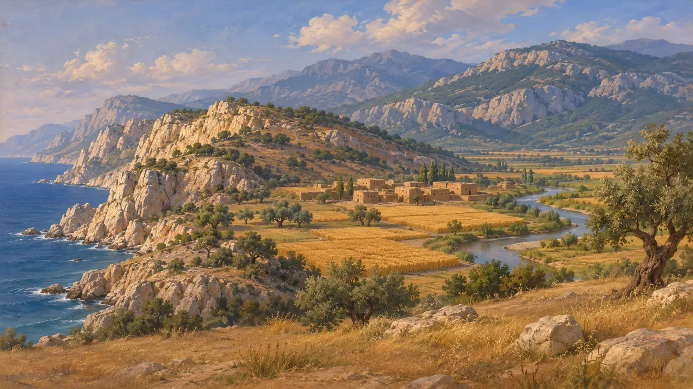
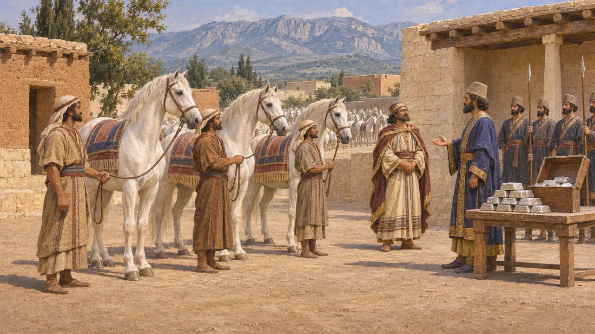
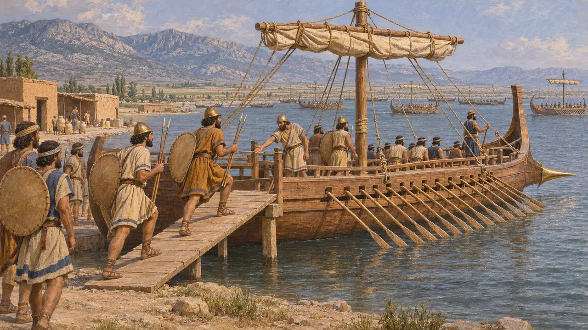
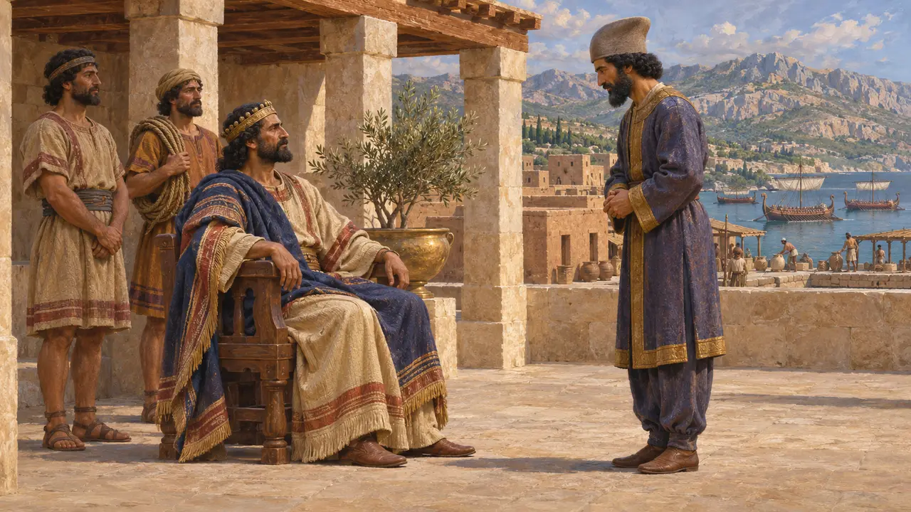
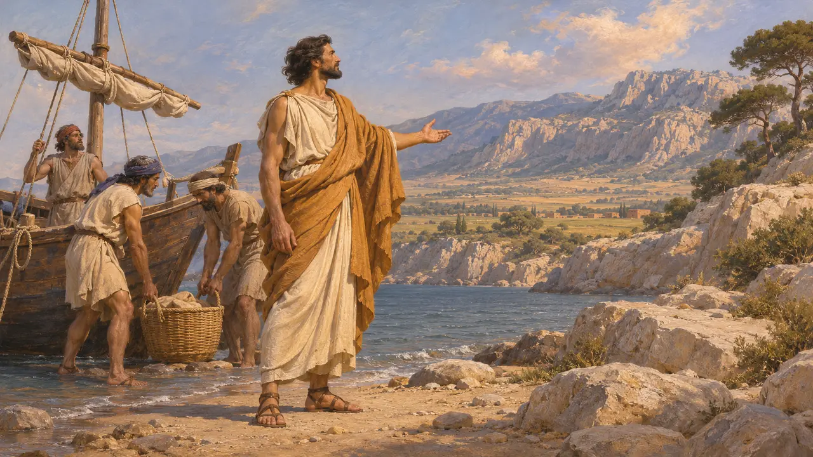

کیلیکیان
مردم جنوب شرقی آناتولی، دریانوردان ناوگان شاه، سدهٔ ششم تا پنجم پ.م.
کیلیکیان در کرانهٔ جنوب خاوری آناتولی، میان کوههای توروس و دریای روبهروی قبرس، میزیستند. در روزگار شاهان هخامنشی، آنان فرمانروایانی از خود داشتند که یونانیان سوئنسیس میخواندندشان. هرودوت میگوید آنان باج خود را به نقره و اسب میپرداختند و کشتیهای جنگی به ناوگان شاهی در لاده و در جنگ خشایارشا در سال 480 پ.م. فرستادند.
در بازی: بازی کیلیکیان را تنها به صورت دستههایی در ناوگان شاه نشان میدهد، که با روایت هرودوت برای سالهای 494 تا 480 پ.م. همخوان است. باجِ اسبشان، سوارهنظامی که سرزمینشان را پاس میداشت و فرمانروایان بومیشان در تصویر بازی جایی ندارند.

کیلیکیهٔ دشتی و کیلیکیهٔ کوهستانی
در اسنادکیلیکیه دشتی حاصلخیز در خاور، پیرامون تارسوس، و کوهستانی ناهموار در باختر، در امتداد کرانه، داشت. متنهای شاهی آشوری این دشت را «قوئه» و کوهستان را «هیلاکو» مینامند. گاهنامهای بابلی گزارش میدهد که نریگلیسر در سال 557 پ.م. به جنگ آپوآشو، شاه پیریندو در باختر ناهموار، لشکر کشید و او را از میان کوهستان تا دریا دنبال کرد. هیچ سند برجاماندهای نمیگوید کیلیکیه چگونه و کی به زیر فرمان پارسیان درآمد.
Neriglissar Chronicle (Chronicle 6 in A. K. Grayson, Assyrian and Babylonian Chronicles, 1975)

سوئنسیس و باج شاه
روایت باستانیهرودوت میگوید یکی از سوئنسیسهای کیلیکیه پس از نبرد خورشیدگرفتگی در برقراری صلح میان لیدیاییان و مادها یاری کرد، و فرمانروایان بعدی کیلیکیه نیز همین نام را داشتند. در فهرست او از حوزههای باج داریوش، کیلیکیه حوزهٔ چهارم بود. این سرزمین 360 اسب سفید، یکی برای هر روز سال، و 500 تالان نقره میپرداخت. به گفتهٔ او، 140 تالان از این نقره به سوارهنظامی میرسید که از کیلیکیه پاسداری میکرد.
Herodotus 1.74; 3.90

کشتیهای کیلیکیایی در ناوگان شاهی
روایت باستانیهرودوت کشتیهای کیلیکی را در سال 494 پ.م. در لاده کنار ناوگروههای فنیقی، قبرسی و مصری قرار میدهد. او میگوید سپاه داتیس و ارتافرنس در سال 490 پ.م. در دشت آلئیون در کیلیکیه گرد آمد و در همانجا سوار ناوگان شد. کیلیکیان در سال 480 پ.م. برای خشایارشا 100 کشتی فرستادند که جنگاورانشان کلاهخودهای بومی و جامههای پشمی بر تن داشتند و سپرهای چرم خام و دو زوبین با خود میبردند. در آرتمیسیون یونانیان ناوگروهی از کشتیهای کیلیکی را نابود کردند.
Herodotus 6.6; 6.95; 7.91; 8.14

پادشاهی همپیمان یا ایالت
مورد مناقشهنام کیلیکیه در فهرستهای داریوش از سرزمینهای فرمانبر نیامده است و فرمانروایان بومی آن زیر نظارت پارسیان بر جای ماندند. تاریخنگاران بر سر این بحث دارند که آیا کیلیکیه پادشاهی دستنشانده بود یا ایالت، و آیا «سوئنسیس» نام بود یا عنوان. هرودوت از سوئنسیس پسر اورومدون در شمار سران ناوگان یاد میکند، و در روایت آیسخولوس، سوئنسیسی در سالامیس جان میبازد. به گفتهٔ هرودوت، خشایارشا بعدها فرمانروایی سراسر کیلیکیه را به کسناگوراس هالیکارناسی سپرد.
Herodotus 7.98; 9.107; Aeschylus, Persians; P. Briant, From Cyrus to Alexander, 2002

کیلیکس، پسر آگنور
افسانهٔ متأخرهرودوت گزارش میدهد که کیلیکیان روزگاری هوپاخائیان خوانده میشدند و نام بعدی خود را از کیلیکس، پسر آگنور فنیقی، گرفتند. کیلیکس به داستان یونانی اروپا تعلق دارد که برادرانش به جستوجوی او برآمدند و اقوام تازهای بنیاد نهادند. این داستان عادت یونانیان را نشان میدهد که اقوام بیگانه را از راه قهرمانان توضیح میدادند. خاستگاه واقعی آنان را ثبت نمیکند.
Herodotus 7.91
منابع
- Herodotus, Histories
- A. K. Grayson, Assyrian and Babylonian Chronicles, 1975
- Aeschylus, Persians
- P. Briant, From Cyrus to Alexander, 2002